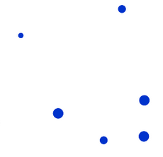

<div class="mini-dialog visualization-window">
    
         <div class="form-horizontal">
                 
             <div class="form-group" style="padding: 15px;border-bottom:1px solid #eee;padding-bottom:10px;margin-bottom:0">
 
         <label class="col-md-2 control-label">Visualization </label>
         <div class="col-md-4">
         <select class="form-control input-sm" ng-model="option.selected" ng-options="setting as setting.name for setting in settings  track by setting.name" ng-change="setSelectedAttribute()">
                 <option value="">--None--</option>
             </select>
             </div>
 </div>
 </div>
           
       
    
     <div class="modal-body">
        
             
         <div class="form-horizontal">  
 
     <div class="form-group" ng-if="(option.selected.name != visualizationTypes.rasterBand && option.selected.name != visualizationTypes.chart)&&  option.selected">
         <label class="col-md-2" style="text-align: right">Attribute: </label>
         <div class="col-md-4">
             <select class="form-control input-sm" ng-model="option.selected.attributeId"
                     ng-init="setSelectedAttribute()"
                     ng-options="attribute.Id as attribute.Name for attribute in numericAttributes"></select>
         </div>
     </div>
 
     <div class="form-group" ng-if="option.selected.name == visualizationTypes.chart && option.selected">
         <label class="col-md-2 control-label" style="text-align: right">Chart Type: </label>
         <div class="col-md-4">
             <select class="form-control input-sm" ng-model="option.selected.chartId"
                     ng-init="initializeAttributeListItemForChart()"
                     ng-options="chart.value as chart.name for chart  in service.chartTypes"></select>
         </div>
     </div>
 
         <div class="form-group" ng-if="option.selected.name == visualizationTypes.chart && option.selected">
             <label class="col-md-2 control-label" style="text-align: right">Chart Size Attribute: </label>
             <div class="col-md-4">
                 <select class="form-control input-sm" ng-model="option.selected.chartSizeAttributeId"
                         ng-init="setSelectedChartSizeAttribute()"
                         ng-options="attribute.Id as attribute.Name for attribute in numericAttributes"></select>
             </div>
         </div>
 
         </div>
 
 
 
     <div class="row span3" ng-if="option.selected.name == visualizationTypes.chart && option.selected">
         <div class="panel panel-default" style="margin-bottom: 0">
             <div class="panel-heading" style="padding: 3px 6px;">
                 <h3 class="panel-title" style="font-size: 14px; line-height: 24px; font-family: RobotoRegular, Trebuchet MS, Verdana, Helvetica, Sans-Serif;">
                     <input type="checkbox" ng-model="option.selected.isCheckedAllAttribute" ng-change="checkAllAttributeForChart()" ng-disabled="numericAttributes.length == 0"/>
                     Select All
                 </h3>
             </div>
             <div class="panel-body" style="padding: 5px;height:150px;overflow-y:auto">
                <!-- <ul class="nav-stacked" style="margin-bottom: 0; max-height: 165px; min-height: 165px; overflow-y: auto; margin-left: 0">-->
                     <!--<div ng-if="flags.PropertyData.length == 0" class="alert" ng-show="!isLoading()">No item</div>-->
                     <table style="width: 100%;">
                         <tr ng-repeat="item in option.selected.chartAttributeList" class="list-group-item" style="white-space: nowrap;">
                             <td style="width: 125px;">
                                 <input type="checkbox" ng-model="item.checked" style="margin-top: 0;" />
                                 {{item.numericAttribute.Name}}
                             </td>
                             <!--<span class="style-editor color">-->
                             <td class="style-editor color"> <input type="text" ng-model="item.attributeColor" color-code-validator /></td>
                             <td ><button type="button" style="margin-left: 10px;" ng-style="{'background-color': item.attributeColor}" colorpicker class="colorpicker-btn" draft-only ng-model="item.attributeColor"></button></td>
                             <!--</span>-->
                         </tr>
                     </table>
                     <div>
                         <i class="fa fa-spinner fa-spin" style="text-align: center; width: 100%; margin-top: 10px;" ng-show="isLoading()"></i>
                     </div>
                <!-- </ul>-->
             </div>
         </div>
     </div>
 
        
 
     <div ng-if="option.selected.name == visualizationTypes.heatmap">
             <div class="row" style="margin-bottom: 10px;">
                 <div class="col-md-2" style="text-align: right">Style Preview:</div>
                 <div class="col-md-2">
                     
                 </div>
             </div>
 
             <div class="row">
                 <div class="col-md-2" style="text-align: right">Radius: </div>
                 <div class="col-md-2">
                     <input type="number" minVal="1" maxval="100" defaultval="10" min-max-validator class="input-small" ng-model="option.selected.radius" />
                 </div>
             </div>
 
             <div class="row">
                 <div class="col-md-2" style="text-align: right">Pixel Density: </div>
                 <div class="col-md-2">
                     <input type="number" minval="1" maxval="100" defaultval="10" min-max-validator class="input-small" ng-model="option.selected.pixelDensity" />
                 </div>
             </div>
 
             <div class="row">
                 <div class="col-md-2" style="text-align: right">Opacity:</div>
                 <div class="col-md-2">
                     <input type="number" class="input-small" minval="0" maxval="1" defaultval="0.5" min-max-validator ng-model="option.selected.opacity" />
                 </div>
             </div>
         </div>
 
         <!--<div class="" ng-if="option.selected.name == visualizationTypes.choropleth">
             <div class="row">
                 <div class="col-md-2" style="text-align: right">Divisions:</div>
                 <div class="col-md-2">
                     <select ng-model="option.selected.divisions" class="input-mini" ng-options="item as item for item in [1,2,3,4,5,6,7]"></select>
                 </div>
             </div>
 
             <div class="row" style="margin-bottom: 10px;">
                 <div class="col-md-2" style="text-align: right">&nbsp;</div>
                 <div class="col-md-2">
                     <sti-plt-pkr ng-model="option.selected.style" sti-pkr-options="choroplethStyles" class="range"
                                  ng-init="option.selected.style = option.selected.style ? option.selected.style : choroplethStyles[0]">
                     </sti-plt-pkr>
                 </div>
             </div>
 
             <div class="row">
                 <div class="col-md-2" style="text-align: right">Technique: </div>
                 <div class="col-md-2">
                     <select ng-model="option.selected.algorithm" class="input-medium"
                             ng-options="algorithm.value as algorithm.name for algorithm in service.choroplethAlgorithms"></select>
                 </div>
             </div>
         </div>
 
         <div class="row" ng-if="option.selected.name == visualizationTypes.weightedPoint">
             <div class="span2" style="text-align: right">&nbsp;</div>
             <div class="span3">
                 
             </div>
         </div>
 
         <div ng-if="option.selected.name == visualizationTypes.rasterBand">
             <div class="style-editor range">
                 <div class="span2" style="text-align: right">Transparency:</div>
                 <div class="span4">
                     <input type="text" ng-model="option.selected.transparency" fixed-number-range min="0" max="100" ng-change="transparencyChanged()" />
                     <span>0</span>
                     <input type="range" min="0" max="100" step="1" ng-model="option.selected.transparency" ng-change="transparencyChanged()" />
                     <span>100</span>
                 </div>
             </div>
             <div class="clearfix"></div>
 
             <hr style="margin: 0 0 5px;" />
 
             <div>
                 <div class="span2" style="text-align: right; height: 30px; line-height: 30px;">Color:</div>
                 <div class="span3 alert" ng-if="!option.selected.isSingleBandedLayer" style="text-align: center">
                     Cannot color multi banded layer
                 </div>
                 <div class="span4" ng-if="option.selected.isSingleBandedLayer" style="display: flex; height: 30px; line-height: 30px;">
                     <label style="line-height: 30px;">
                         <input type="radio" ng-model="option.selected.isRange" value="false" ng-change="radioSelectionChanged()" style="margin-top: 0" />
                         By Unique
                     </label>
                     <label style="padding-left: 20px;line-height: 30px;">
                         <input type="radio" ng-model="option.selected.isRange" value="true" ng-change="radioSelectionChanged()" style="margin-top: 0" />
                         By Range
                     </label>
                 </div>
             </div>
             <div class="clearfix"></div>
 
             <div ng-if="option.selected.isRange == 'true'">
                 <div ng-if="option.selected.isSingleBandedLayer">
                     <div class="span2" style="text-align: right; height: 30px; line-height: 30px;">Color Ramp:</div>
                     <div class="span3">
                         <sti-plt-pkr ng-model="option.selected.style" sti-pkr-options="choroplethStyles" class="range"></sti-plt-pkr>
                     </div>
                 </div>
             </div>
 
             <div ng-if="option.selected.isRange == 'false'">
                 <div class="span5" ng-if="isLoading()">
                     <i class="fa fa-spinner fa-spin" style="text-align: center; width: 100%;"></i>
                 </div>
                 <div class="alert" ng-if="option.selected.isLargeDataset && !isLoading()" style="text-align: center">
                     Cannot color layer by unique values that has more than 50 unique values
                 </div>
                 <div ng-if="!option.selected.isLargeDataset && !isLoading()">
                     <div>
                         <div class="span2" style="text-align: right; height: 30px; line-height: 30px;">Color Ramp:</div>
                         <div class="span4">
                             <sti-plt-pkr ng-model="colorRamp.chosenPalette" sti-pkr-options="paletteItems"></sti-plt-pkr>
                         </div>
                     </div>
                     <div class="clearfix"></div>
                     <div>
                         <div class="panel panel-default span2" style="margin-bottom: 0">
                             <div class="panel-heading" style="padding: 0 5px;">
                                 <label class="panel-title" style="font-size: 14px; font-weight: bold; font-family: RobotoRegular,Trebuchet MS,Verdana,Helvetica,Sans-Serif; margin-top: 20px;">
                                     <input checkbox-all="option.selected.values-checked" style="margin-top: 0;" ng-disabled="!hasUnselectedValues()" />
                                     Select All
                                 </label>
                             </div>
                             <div class="panel-body" style="padding: 5px; min-height: 160px;">
                                 <ul class="nav-stacked" style="margin-bottom: 0; max-height: 160px; min-height: 160px; overflow-y: auto; margin-left: 0">
                                     <div ng-if="!hasUnselectedValues()" class="alert" style="margin-top: 20px;">No item</div>
                                     <li ng-repeat="item in option.selected.values | filter:{isSelected:false}" class="list-group-item active">
                                         <input type="checkbox" ng-attr-name="{{item.value}}" ng-model="item.checked" style="margin-top: 0;" />
                                         {{item.value | identifyBlank}}
                                     </li>
                                 </ul>
                             </div>
 
                             <div class="panel-footer" style="padding: 3px;">
                                 <button type="button" class="btn btn-success" style="padding: 2px 6px;" ng-click="addSelectionsToGrid()" ng-disabled="!hasCheckedValue()"><i class="fa fa-plus-circle fa-fw"></i>ADD</button>
                             </div>
                         </div>
                         <div class="span4">
                             <div style="padding: 13px 0;">
                                 <div class="fixed-table-container">
                                     <div class="header-background titleBar"></div>
                                     <div class="fixed-table-container-inner">
                                         <table cellspacing="0" class="table-striped">
                                             <thead>
                                                 <tr>
                                                     <th title="click for reverse colors" class="first" style="width: 70px; margin-top: 5px; cursor: pointer" ng-click='reverseColorSet()'>
                                                         <div class="th-inner"><i class='fa fa-fw fa-exchange fa-rotate-90' style='margin-right: 2px; font-size: 17px; color: #14b4f8;'></i>Color</div>
                                                     </th>
                                                     <th style="width: 150px;">
                                                         <div class="th-inner" style="padding-left: 67px;">Value</div>
                                                     </th>
                                                     <th style="width: 30px;">
                                                         <div class="th-inner"><i class="fa fa-times-circle" ng-click="removeAll()" style="color: #df524e; cursor: pointer; margin-top: 8px; padding-left: 9px;" title="Remove All"></i></div>
                                                     </th>
                                                 </tr>
                                             </thead>
                                             <tbody>
                                                 <tr ng-class="{'active': selectedClass == class}" ng-repeat="class in option.selected.values | filter:{isSelected:true}">
                                                     <td style="text-align: center">
                                                         <div class="style-preview" style="width: 25px; height: 25px;">
                                                             <svg width="25" height="25" viewPort="0 0 25 25" version="1.1" xmlns="http://www.w3.org/2000/svg"
                                                                  stroke-linecap="round" pointer-events="visiblePainted" stroke-linejoin="round"
                                                                  stroke="black" stroke-width="1" ng-attr-fill="{{class.color}}" fill-opacity="1">
                                                                 <rect x="0" y="0" width="25" height="25" />
                                                             </svg>
                                                         </div>
                                                     </td>
                                                     <td style="width: 150px; text-align: center; word-break: break-all;">{{class.value | identifyBlank}}</td>
                                                     <td style="width: 30px; text-align: center;"><i class="fa fa-times-circle" ng-click="removeChosenItem(class)" style="color: #df524e; cursor: pointer;" title="Remove"></i></td>
                                                 </tr>
                                                 <tr ng-if="hasUnselectedValues() && hasSelectedValues()">
                                                     <td style="text-align: center">
                                                         <div class="style-preview" style="width: 25px; height: 25px;">
                                                             <svg width="25" height="25" viewPort="0 0 25 25" version="1.1" xmlns="http://www.w3.org/2000/svg"
                                                                  stroke-linecap="round" pointer-events="visiblePainted" stroke-linejoin="round"
                                                                  stroke="black" stroke-width="1" fill="black" fill-opacity="1">
                                                                 <rect x="0" y="0" width="25" height="25" />
                                                             </svg>
                                                         </div>
                                                     </td>
                                                     <td style="width: 150px; text-align: center; word-break: break-all;">Others</td>
                                                     <td>&nbsp;</td>
                                                 </tr>
                                             </tbody>
                                             <tfoot ng-if="!hasSelectedValues()">
                                                 <tr style="height: 184px;">
                                                     <td colspan="4" style="text-align: center; padding: 20px; font-style: italic; color: lightgray">
                                                         <div class="alert">No classifier available</div>
                                                     </td>
                                                 </tr>
                                             </tfoot>
                                         </table>
                                     </div>
                                 </div>
                             </div>
                         </div>
                     </div>
                 </div>
             </div>
             <div class="clearfix"></div>
         </div>-->
     </div>
     <!-- <div class="modal-footer">
         <input type="button" class="btn btn-success" ng-click="applyVisualization()" value="Ok" />
         <input type="button" class="btn btn-danger" ng-click="close()" value="Cancel" />
     </div> -->
 </div>
 
 <style type="text/css">
     .range .palette-choice-list {
         width: 178px;
     }
 
     .range .palette-picker-container {
         min-width: 180px;
     }
 
     .range .color-preview {
         width: 23.5px;
     }
     .form-group {
     margin-bottom: 10px;
 }
 .list-group-item
 {
     padding: 2px 15px;
 }
 </style>